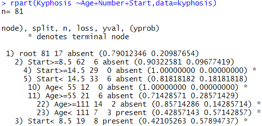
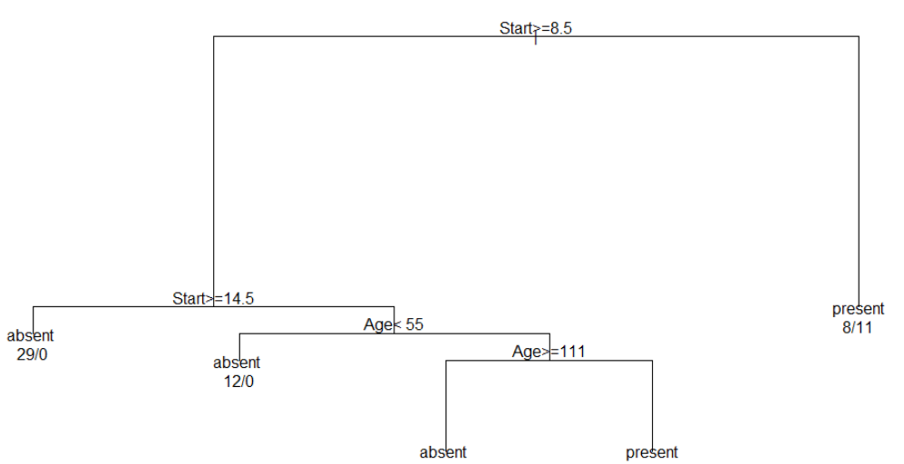

ADsP 문제 풀이 7일차
의사결정나무
11회 기출문제
1. 다음 중 의사결정나무의 활용분야로 가장 적절한 것은?
장바구니분석
교차판매예측
교호작용의 파악
텍스트 분석
18회 기출문제
2. 아래는 kyphosis라는 자료를 이용하여 의사결정나무 분석을 수행한 결과이다. 결과에 대한 해석으로 부적절한 것은?


뿌리마디에서 아래로 내려갈수록 각 마디에서의 불순도는 점차 증가한다.
이 자료에서 Start변수의 값이 14.5 이상인 관찰치는 Kypohosis 변수의 값이 모두 absent였을 것이다.
위 결과의 단계에서 멈추지 않고 추가로 가지를 생성한다면, 새로운 자료에 대한 예측력은 떨어질 수도 있다.
뿌리마디의 자료는 Start변수를 이용하여 분리했을 때 present와 absent를 가장 잘 분리시킬 수 있다.
19회 기출문제
3. 의사결정나무모형은 분류분석을 위해 실무적으로 가장 많이 사용하는 모델 중 하나이다. 그러나 끝마디가 너무 많이 나오면 모형이 과대 적합된 상태로 현실문제에 적용할 수 있는 규칙이 나오지 않게 된다. 이를 해결하기 위해 분류도니 관측치의 비율이나 MSE(Mean Squared Error)등을 고려하여 과적합 문제를 해결하는 방법은?
제출하기